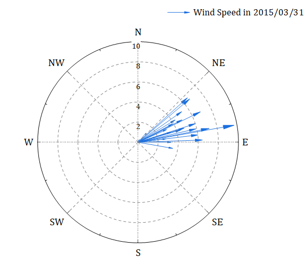

Compass-Plot

少なくとも一組のXYでデータを選択します。
メニューの作図 > 特殊グラフ：コンパスプロットを選択します。
Compass.otpu (上記はOriginのプログラムフォルダにインストールされています。)
これは極座標のXYXYベクトル です。θrθr極座標ベクトルグラフの変形で、その始点は極座標の中心で、選択したXY列には終点の角度と半径座標が含まれます。
作図の詳細ダイアログの「ベクトル」タブで設定を変更することができます。